Sketches and illustrations
Dimensions from A5 to A6
2016—2017
Practice developed freely on the theme of the body and space.
The emphasis is on the light, color but also touch and material.
« What’s the point, when it’s all about realising that our eyes are already much more than receivers
for lights, colors and lines: computers of the world, and who have the gift of the visible as we say that the inspired
man has the gift of language. Of course, this gift is earned by practise, and it is not in a few months, nor is it in solitude
that a painter comes into possession of his vision. That is not the question: early or late, spontaneous or formed
in the museum, his vision in any case develops only by seeing, only learns from itself. »
« The vision is hanging on the movement. We only see what we look at. What would the vision be without any movement of the eyes,
and how would their movement not cloud things if it were itself reflex or blind, if it did not have its antennas, its clairvoyance,
if vision did not precede him? »
Maurice Merleau—Ponty,
Eye and Mind,
First published in 1964
The emphasis is on the light, color but also touch and material.
« What’s the point, when it’s all about realising that our eyes are already much more than receivers
for lights, colors and lines: computers of the world, and who have the gift of the visible as we say that the inspired
man has the gift of language. Of course, this gift is earned by practise, and it is not in a few months, nor is it in solitude
that a painter comes into possession of his vision. That is not the question: early or late, spontaneous or formed
in the museum, his vision in any case develops only by seeing, only learns from itself. »
« The vision is hanging on the movement. We only see what we look at. What would the vision be without any movement of the eyes,
and how would their movement not cloud things if it were itself reflex or blind, if it did not have its antennas, its clairvoyance,
if vision did not precede him? »
Maurice Merleau—Ponty,
Eye and Mind,
First published in 1964
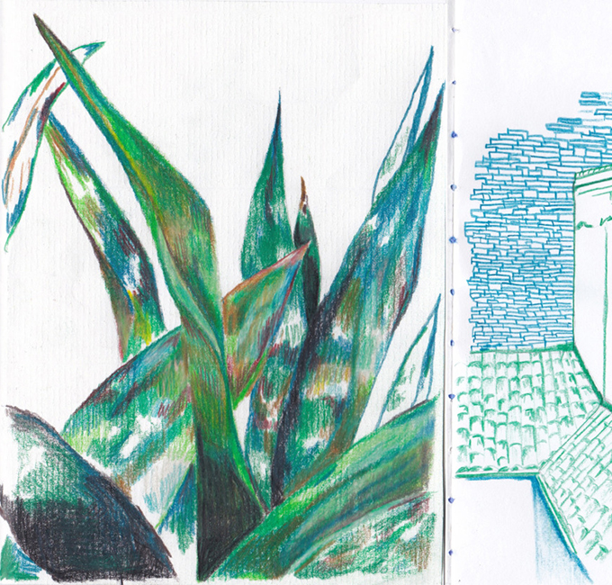
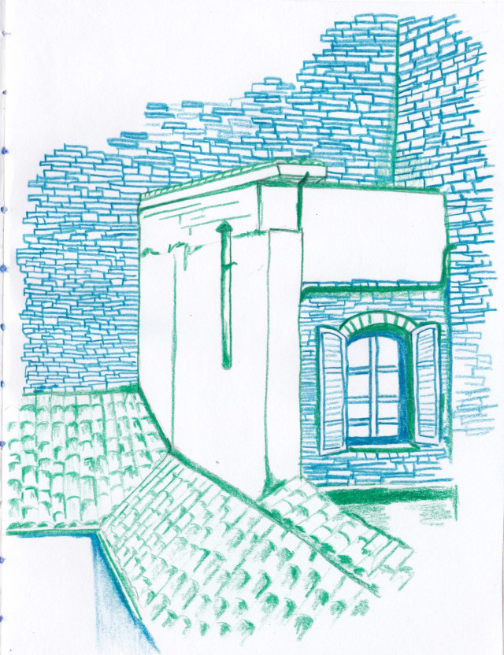
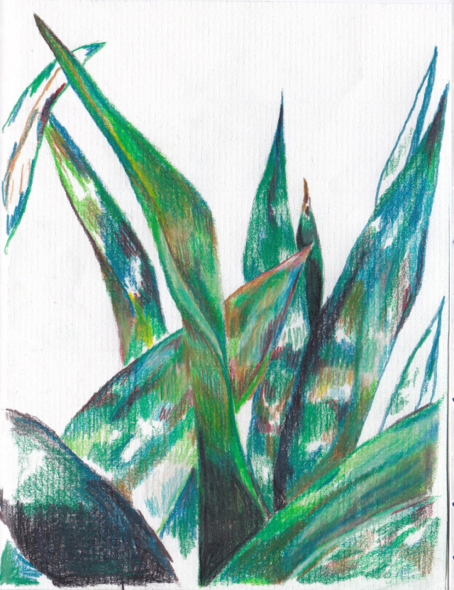
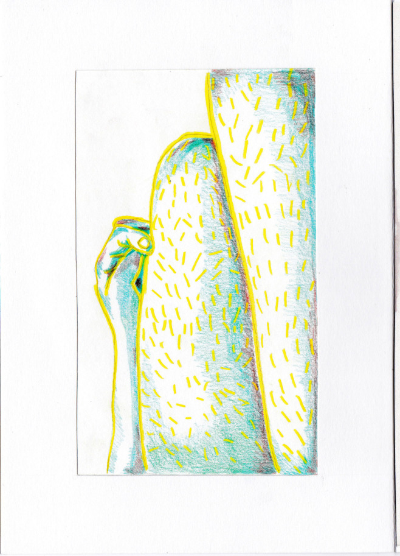
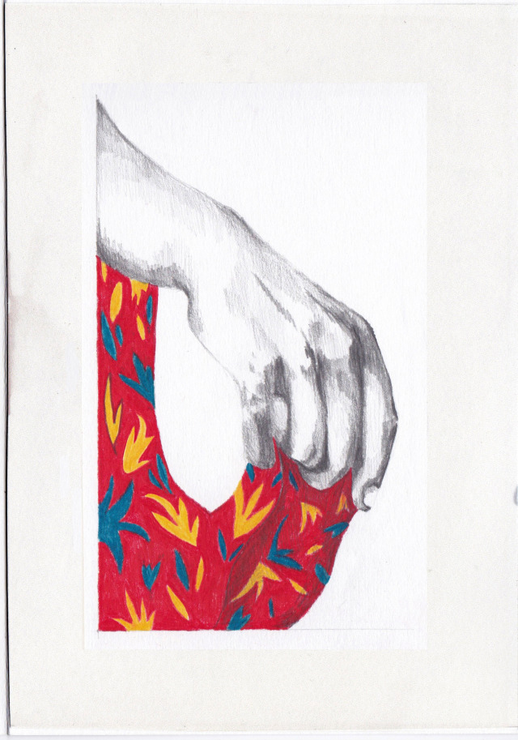
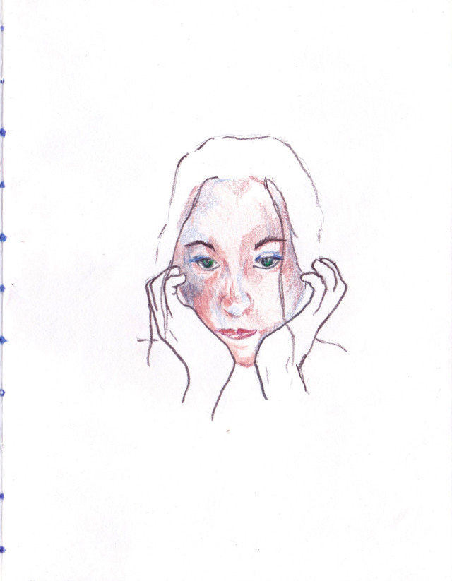
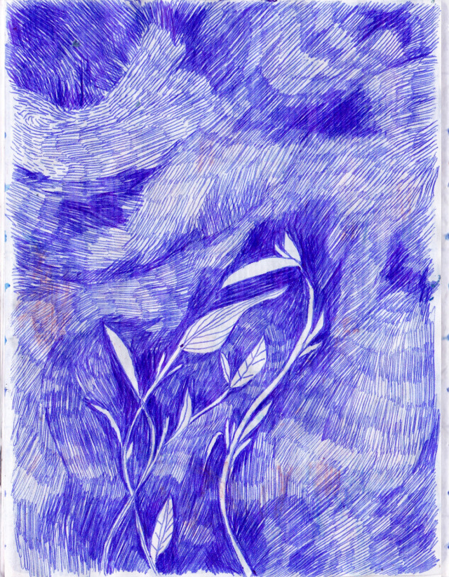
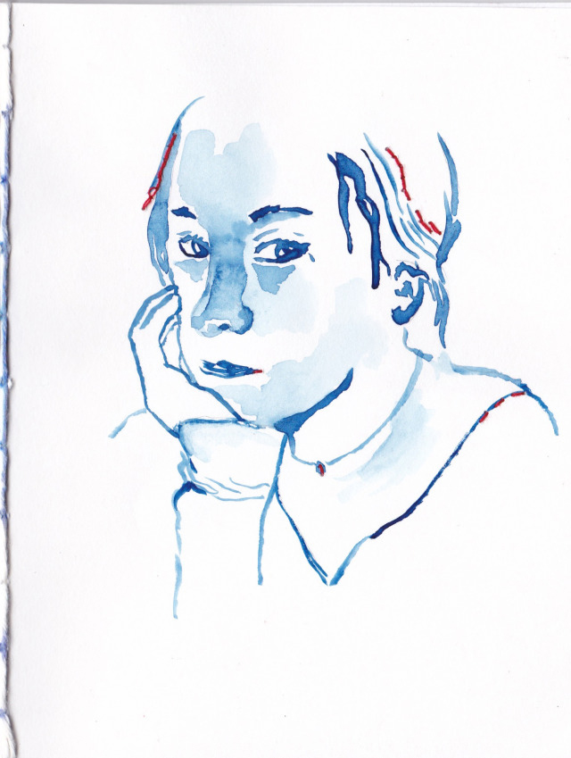
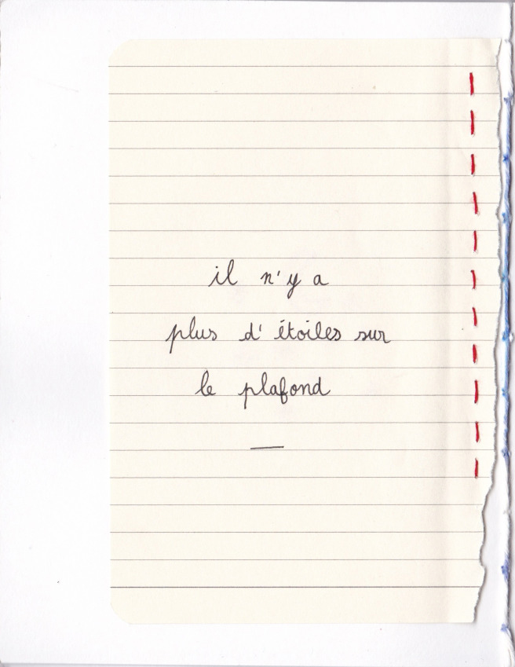
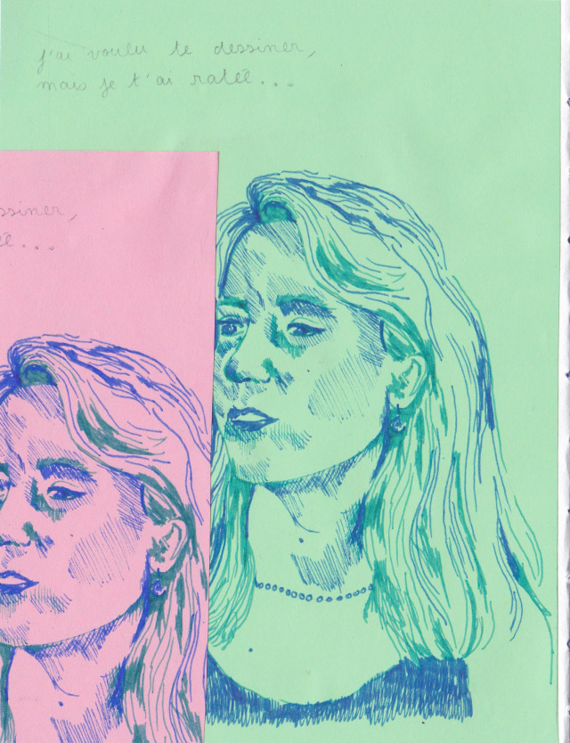
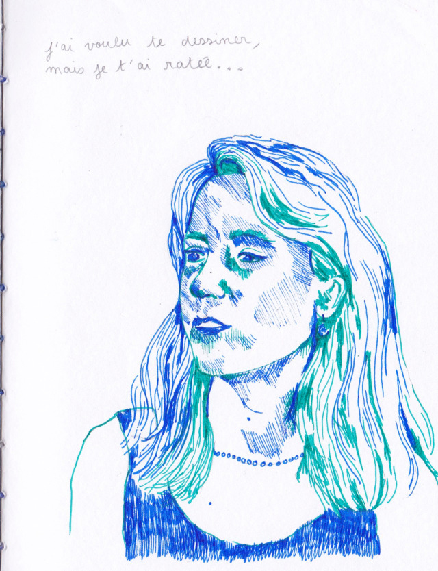
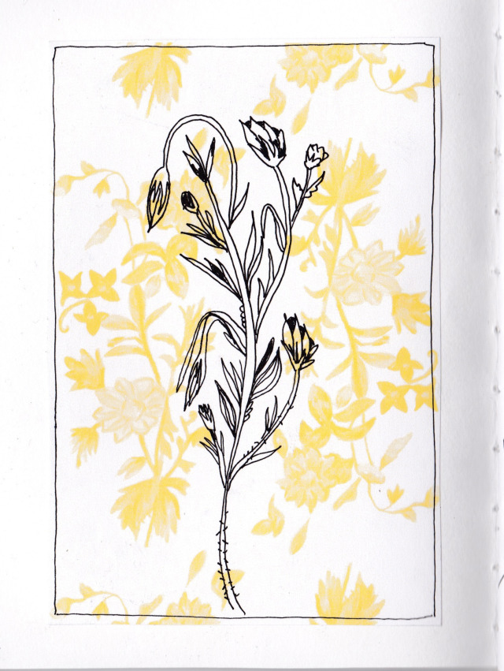
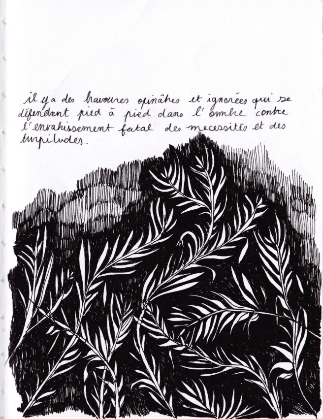
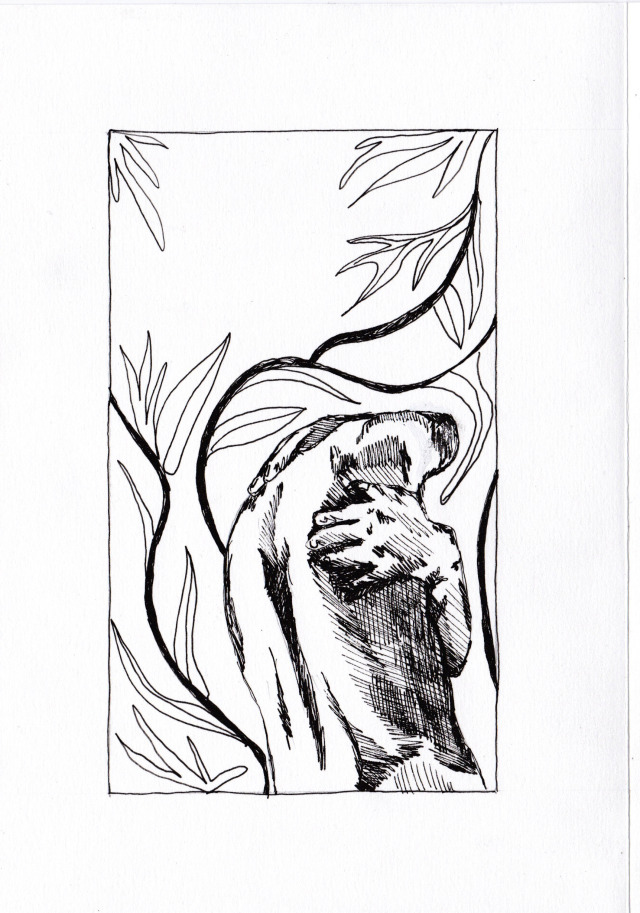

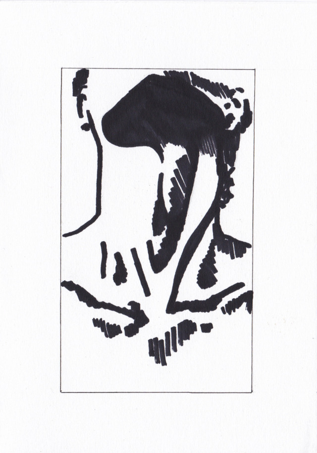
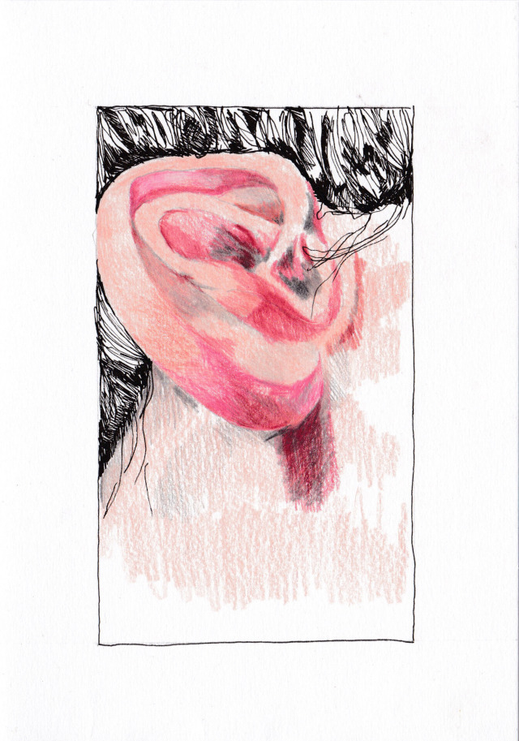
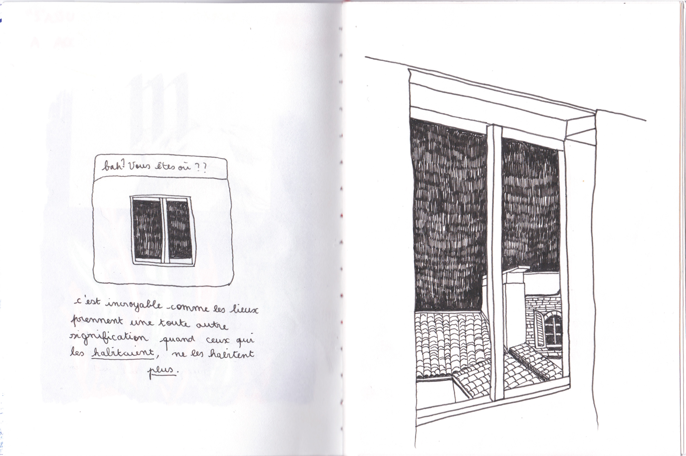